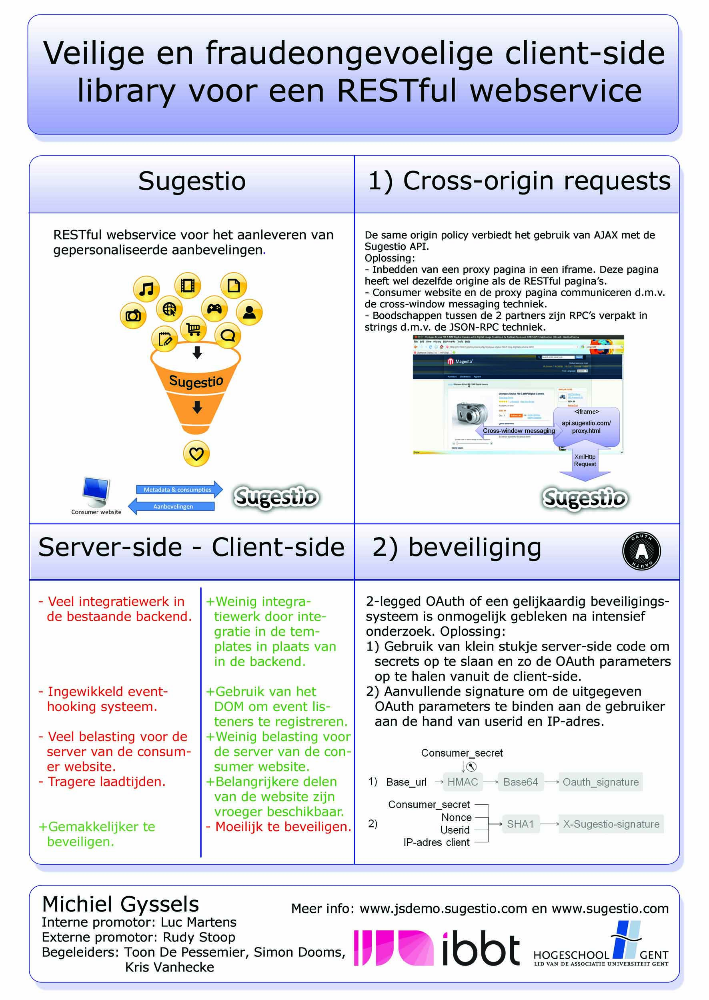

Info
Michiel Gyssels
Studie naar een veilig en fraudeongevoelig
framework voor het aanleveren van
gepersonaliseerde web content
Masterproef voorgedragen tot het behalen van het diploma van
MASTER IN DE INDUSTRIELE WETENSCHAPPEN: INFORMATICA

| Promotoren: | Rudy STOOP |
| Luc MARTENS | |
| Toon DE PESSEMIER | |
| Simon DOOMS |
Probleemstelling
Sugestio is een RESTful webservice. Als een website gebruik wil maken van Sugestio, dan moet het communiceren met de webservice. De ontwikkelaar van deze website kan zelf voor deze communicatie zorgen of gebruik maken van één van de libraries ontwikkeld door Sugestio, indien mogelijk. Er zijn reeds libraries voor Sugestio ontwikkeld in verschillende talen zoals PHP, Java EE, Python, Ruby en .NET.Sugestio kan dus gebruikt worden in alle populaire omgevingen voor web development. Er zijn ook modules beschikbaar voor het Drupal Content Management System (CMS) en het Magento E-Commerce platform, 2 populaire systemen voor content management (CMS) ontwikkeld in PHP.
Er zijn echter een aantal gemeenschappelijke problemen met deze libraries: 1. Integratie in de bestaande back-end.
Een probleem met deze server-side libraries is dat ze nog teveel integratiewerk vragen in de bestaande backend van de consumer website.
Om Sugestio aan te spreken via een van deze libraries werkt men met een systeem van hooking. Dit wil zeggen dat bij aanmaak van een item (bv. een pagina, product of nieuwsbericht) of bij bepaalde consumpties door de gebruiker (bv. een page view) de Sugestio library hierop moet inhaken om deze gebeurtenissen te melden aan de Sugestio webservice.
Willen we bijvoorbeeld in het geval van een e-commerce applicatie bij registratie van een klant zijn gegevens doorsturen naar Sugestio, dan zou codevoorbeeld 2.1 gepast kunnen zijn:
-
Integratie in de bestaande back-end.
Een probleem met deze server-side libraries is dat ze nog teveel integratiewerk vragen in de bestaande backend van de consumer website.
Om Sugestio aan te spreken via een van deze libraries werkt men met een systeem van hooking. Dit wil zeggen dat bij aanmaak van een item (bv. een pagina, product of nieuwsbericht) of bij bepaalde consumpties door de gebruiker (bv. een page view) de Sugestio library hierop moet inhaken om deze gebeurtenissen te melden aan de Sugestio webservice.
Dit valt echter heel wat moeilijker te doen als men een raamwerk of CMS gebruikt. Deze systemen zijn vaak generisch gemaakt waardoor eigen code inpluggen om Sugestio te ondersteuenen vaak moeilijk is. De ontwikkelaar moet dan heel wat tijd steken in het begrijpen van de codebase van het raamwerk. Deze soms dure integratie ontmoedigt ook om Sugestio uit te proberen tijdens een testperiode. -
De kwaliteit van de aanbevelingen.
De kwaliteit van de aanbevelingen hangt sterk af van de kwaliteit van de integratie. De ontwikkelaar dient, vooraleer Sugestio te integreren in de website, te onderzoeken:
- hoe aanbevelingsalgoritmen werken en wat de mogelijkheden van Sugestio zijn;
- hoe de Sugestio RESTful API werkt;
- op welke momenten er een API call moet gebeuren en welke informatie deze calls moet bevatten.
- Extra belasting voor de server van de consumer site. Sugestio aanroepen brengt extra dataverkeer met zich mee voor de server van de con- sumer site.
- Tragere laadtijden van de consumer site. Als een pagina enkele aanroepen op de Sugestio webservice uitvoert gebeurt dit syn- chroon, de gebruiker moet dus wachten op deze aanroepen vooraleer de pagina beschik- baar is.
Doel van de masterproef
Een oplossing voor de problemen van de server-side libraries zou een client-side library zijn die de consumer developer meer eenvoud aanbiedt. Een client-side library kan immers nauw samenwerken met de HyperText Markup Language (HTML) Document Object Model (DOM) elementen van de consumer site. Zo kan de library volledig los staan van de backend, maar toch alle functionaliteit van de Sugestio webservice aanbieden. Een client-side library ontwikkelen voor de Sugestio API heeft echter 2 belangrijke moeilijkheden:- De API requests moeten gebeuren met AJAX. Het XmlHttpRequest (XHR) object is echter onderhevig aan het same origin policy waardoor deze AJAX-calls niet over verschillende domeinen kunnen gebeuren. Het beveiligen van een client-side library is geen evidente zaak.
Cross-domain requests
JavaScript is net als alle andere browser-side programmeertalen onderhevig aan het same origin policy. Dat beleid laat toe dat scripts afkomstig van hetzelfde domein toegang hebben tot elkaars methodes en variabelen maar verbiedt tegelijk deze toegang tussen scripts van verschillende domeinen.Ook het XHR object, dat dient voor de AJAX aanroepen, is onderhevig aan dit beleid. Hierdoor is het niet mogelijk om standaard XHRs naar een andere domein uit te voeren. Dit is een grote handicap als men AJAX wil gebruiken om externe API’s aan te spreken zoals Twitter, Flickr of in ons geval de Sugestio webservice.
Gelukkig is dit een veelvoorkomend probleem en zijn er ondertussen verschillende goede oplossingen hiervoor gevonden. In het onderzoekdeel van de masterproef zullen deze oplossin- gen kritisch vergeleken worden en de beste oplossingen gebruikt worden bij de implementatie van de client-side Sugestio library.
Gelukkig is dit een veelvoorkomend probleem en zijn er ondertussen verschillende goede oplossingen hiervoor gevonden. In het onderzoekdeel van de masterproef zullen deze oplossin- gen kritisch vergeleken worden en de beste oplossingen gebruikt worden bij de implementatie van de client-side Sugestio library.
Beveiliging van de API calls
Sugestio werkt voor de beveiliging van de REST calls met OAuth (www.oauth.net). OAuth (of Open Authorization) is een open protocol voor beveiligde API autorisatie via een stan- daard en een eenvoudige methode voor zowel desktop- als webapplicaties.De standaardvorm is 3-legged. Daarbij wil een bepaalde applicatie (de consumer) data ge- bruiken over zijn bezoeker (de user) die een service provider (de provider) bezit. In deze 3-legged OAuth vorm zal de user gevraagd worden of hij/zij de gegevens over hem/haar, die de service provider bezit, wilt delen met de consumer applicatie.
Er bestaat ook nog een 2-legged variant, ook gekend als de signed-fetch variant. Bij deze variant is de consumer gerechtigd om in de naam van al zijn gebruikers te handelen. De user moet dus niet de consumer applicatie autoriseren en het wordt dan ook meer gebruikt als authenticatie tussen de consumer en de service provider. Sugestio gebruikt deze 2-legged variant.
Het beveiligen van een client-side library is echter geen evidente zaak. Dit komt omdat de client (in ons geval de user) steeds aan de broncode kan, waardoor men geen code kan af- schermen van de gebruiker.
OAuth steunt op het delen van bepaalde secrets tussen de consumer en de provider, het consumer-key paar genoemd. Aangezien we deze secrets client-side niet kunnen afschermen zullen we moeten onderzoeken hoe de client-side library toch beveiligd kan worden. Men zal ook rekening moeten houden met andere mogelijke beveiligingslekken zoals bijvoor- beeld cross-site scripting. Cross-site scripting is een techniek waarbij men eigen javascript-code injecteert en zo bepaalde functies kan omzeilen.
De uitdaging van deze masterproef is een client-side library te maken die gemakkelijk te integreren is bij elk soort consumer website en bovendien fraudeongevoelig is.
Poster
{kind=link}
(click on the poster to view full size)